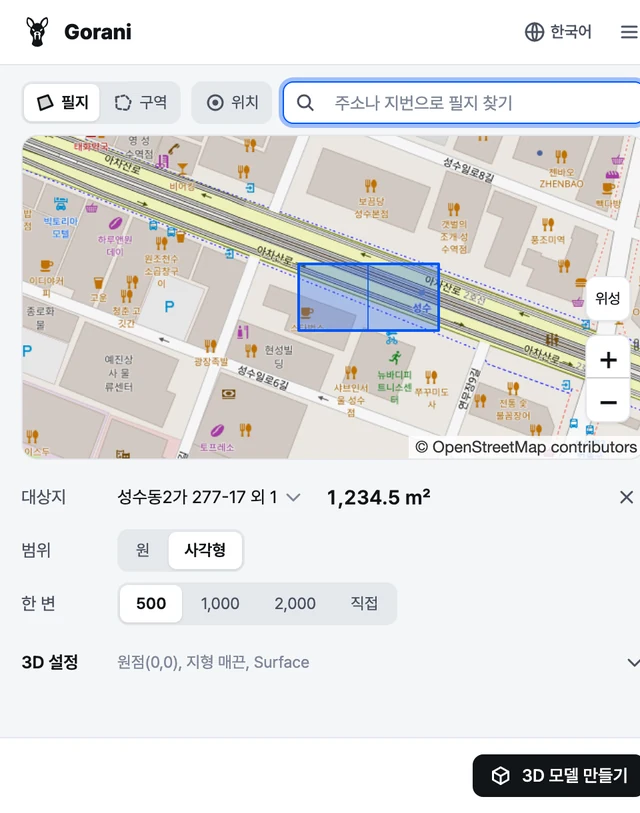
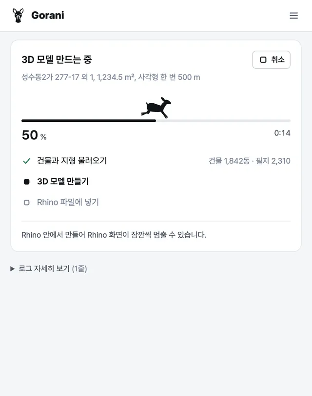
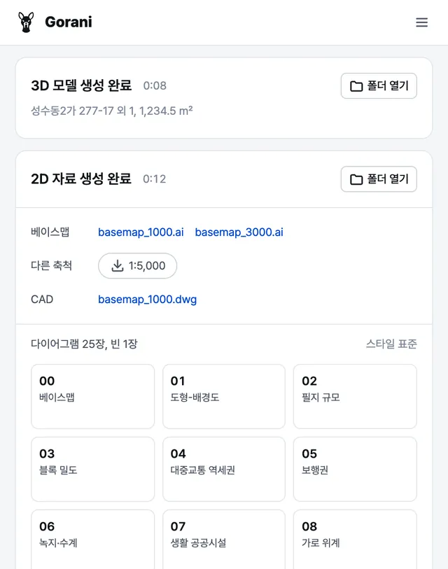

사이트 3D 모델링 및 분석
대상지를 고르면 3D 지형과 2D 분석 자료를 생성합니다. 라이노, 스케치업, 블렌더에서 작동하는 무료 플러그인입니다.
학생 시절 편하게 쓰려고 만들었던 툴을 다듬어 공개했습니다.
- Rhino 8
- SketchUp 2022 이상
- Blender 4.2 이상
- Windows, macOS
설치
-
패키지 매니저 열기
Rhino 명령창에 입력
PackageManager -
Gorani 설치
검색칸에 Gorani를 넣고 설치
-
Rhino 다시 시작
다시 켜야 플러그인이 올라옵니다.
-
패널 열기
명령창에 입력
Gorani
-
Extension Warehouse 열기
메뉴 확장 > Extension Warehouse
-
Gorani 설치
Gorani를 검색하고 설치
-
패널 열기
메뉴 확장 > Gorani, 또는 도구 막대의 고라니 단추
-
Get Extensions 열기
메뉴 Edit > Preferences > Get Extensions. 처음이면 온라인 접근을 허용합니다.
-
Gorani 설치
Gorani를 검색하고 Install
-
패널 열기
3D 뷰에서 N을 눌러 사이드바 Gorani > 패널 열기. 패널은 브라우저 탭으로 열립니다.
처음 쓰는 지역은 데이터를 받느라 시간이 조금 더 걸립니다. 문제가 생기면 GitHub Issues에 남겨 주세요.
사용 순서
패널은 프로그램 옆에 붙어 열립니다. 옵션은 기본값으로 둬도 됩니다.
-

1대상지와 범위 고르기
지도에서 필지를 누르거나 구역을 그리고 범위를 정합니다. 주소나 지번으로 찾을 수 있고, 해외는 OpenStreetMap 자료로 만듭니다.
-

23D 모델 만들기
건물, 도로, 지형, 하천이 열려 있는 문서에 레이어별로 들어갑니다. 건물 높이는 층수로 정합니다.
-

32D 자료 만들기
베이스맵(.ai), 현황도와 분석도, 조서(CSV)가 결과 폴더
result/대상지_날짜/안의2D/에 저장됩니다.